220-летняя история Кировского завода отражает развитие российской промышленности и самого государства
1801
Начало истории
21 марта по ст. стилю 1801 года был основан
Санкт-Петербургский чугунолитейный завод. Тогда предприятие выполняло заказы по
производству артиллерийских боеприпасов. Первым директором завода стал Чарльз
Гаскойн –
на тот момент один из ведущих инженеров и промышленников Великобритании.
С
1812
года завод начал изготавливать паровые машины и развивать машиностроительное
направление. В это же время специалисты завода осваивают художественно-литейное
производство. Выполняются работы по созданию скульптур и архитектурных ансамблей
для Петербурга и его пригородов: литье для Нарвских триумфальных воротах, скульптуры
и
литье для Львиного и Банковского мостиков и другие. Продукция того времени и сейчас
украшает улицы Северной Пальмиры.
В 1824 году завод был практически разрушен
после масштабного наводнения. Эти события описал А. С. Пушкин в поэме «Медный
всадник».
Следующие сорок лет стали для завода периодом борьбы за выживание.
1801
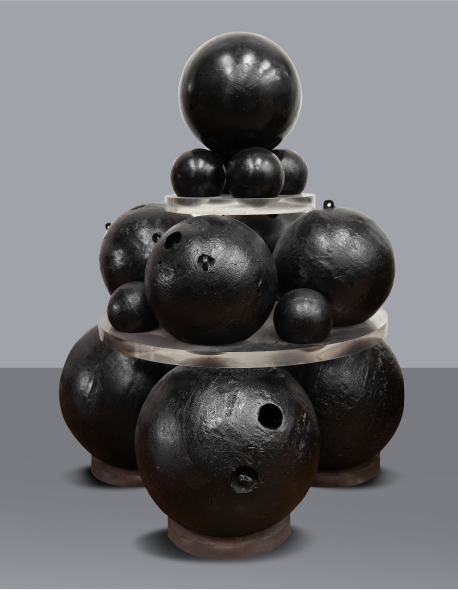
Артиллерийские боеприпасы. 3 апреля 1801 года было отлито первое пушечное ядро. Именно этот день считается днем рождения завода
1801
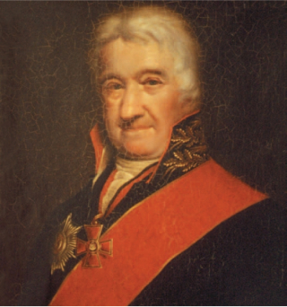
Чарльз (Карл) Гаскойн (1737–1806) Шотландский и российский архитектор, механик, оружейник, изобретатель, действительный статский советник. Руководил Санкт-Петербургским чугунолитейным заводом до 1806 года
1834
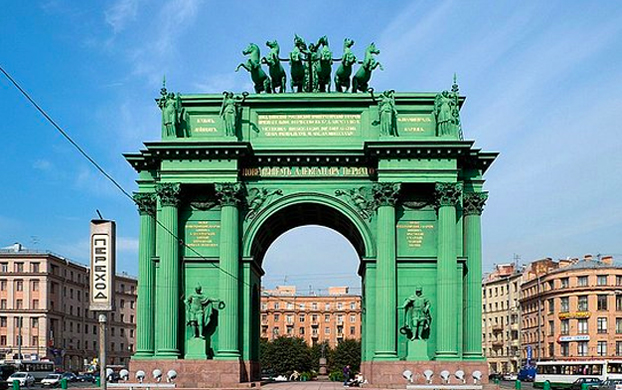
Нарвские триумфальные ворота. Художественно-литейное производство Санкт-Петербургского чугунолитейного завода
1868
Путиловский завод
В 1868 году завод приобрел известный российский
инженер и предприниматель Николай Иванович Путилов. За 12 лет он значительно увеличил
объемы производства завода и расширил ассортимент продукции. с 1868 по 1922 год
предприятие носит имя «Путиловский завод».
Завод стал основным поставщиком
рельсов для железных дорог России, выплавлял качественные стали, производил боеприпасы,
вагоны, пушки, орудийные башни для военных кораблей, крупногабаритные
металлоконструкции. Многие виды продукции производились по собственной
технологии.
При Путилове были заложены основы многоотраслевого производства и
высокого профессионального мастерства. Открылись больница, столовая, библиотека, разбит
парк и построен театр.
Первые рельсы Путиловского завода
Рельсы, которые изготавливал Н. И. Путилов, имели оригинальную конструкцию: на старые изношенные рельсы наваривалась прочная стальная головка, и рельс снова пускался в дело. 3 февраля 1868 года состоялись показательные испытания. Чугунную «бабу» весом в 32 пуда уронили на путиловский рельс – рельс выдержал. «Теперь давай английский», – приказал Путилов. Английский рельс треснул сразу. Победу над Англией праздновали прямо в цехах.
1869
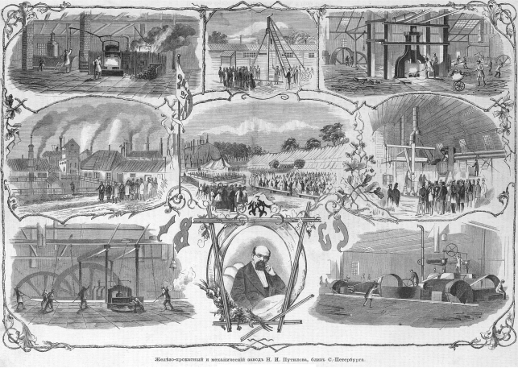
Листовка «Железо-прокатный и механический завод Н. И. Путилова»
1868
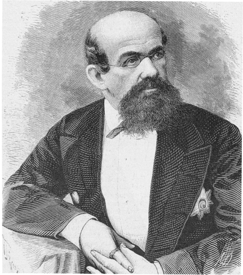
Николай Иванович Путилов (1820-1880) Русский математик, инженер, предприниматель, учредитель Общества Путиловских заводов в Санкт-Петербурге. Действительный статский советник
1894
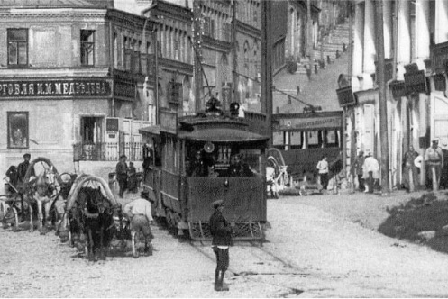
Рекламное объявление Путиловского завода в Санкт-Петербурге.
Галерея славы
Трудовые и боевые заслуги кировцев достойно оценены государством. На знамени предприятия семь орденов:
-
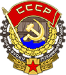
Орден Трудового Красного Знамени (1926 г.)
-
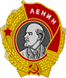
Орден Ленина 1939
-
Орден Ленина 1951 гг
-
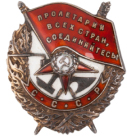
Орден Красного Знамени (1940 г.)
-
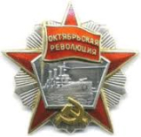
Орден Октябрьской Революции (1970 г.)
-
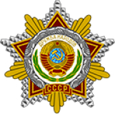
Орден Дружбы народов (1976 г.)
-
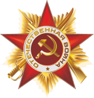
Орден Отечественной войны I степени (1985 г.).
Галерея славы
За успехами и многочисленными передовыми разработками Кировского завода стоят известные всему миру ученые, инженеры, конструкторы, руководители. Их совместный труд обеспечил заводу репутацию флагмана российской промышленности:
-
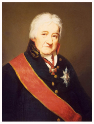
Чарльз (Карл) Гаскойн (1737 - 1806) — первый директор завода
-
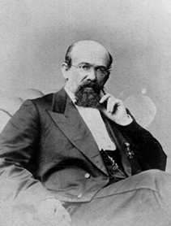
Николай Иванович Путилов (1820 - 1880) - директор в 1868 - 1880 годах
-
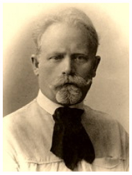
Александр Александрович Износков (1845 – 1911) — основатель мартеновского производства на Путиловском заводе
-
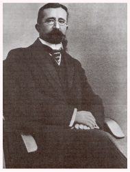
Алексей Иванович Путилов (1866 — 1940) — директор завода в 1913 — 1916 годах
-

Фран Францевич Лендер (1881 — 1927) — выдающийся конструктор, профессор, педагог и ученый
-
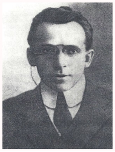
Иван Иванович Бобров (1882 — 1960) — советский инженер-кораблестроитель, директор Путиловского завода
-
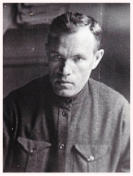
Карл Мартович Отс (1892 — 1937) — директор Кировского завода в 1930 — 1936 годах
-
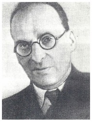
Борис Соломонович Фрумкин (1897 — 1989) — главный конструктор первых турбозубчатых агрегатов
-
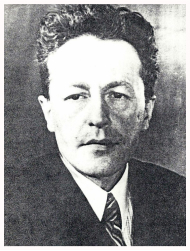
Вульф Эльевич Берг (1899 — 1965) — главный конструктор турбин
-
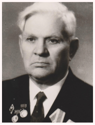
Иван Сергеевич Исаев (1899 — 1992) — директор Кировского завода в 1954 — 1965 годах
-
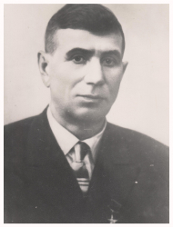
Сергей Максимович Лебедев (1902 – 1961) – новатор и организатор сталелитейного производства
-
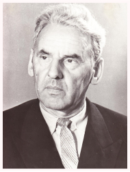
Александр Хрисанфович Старостенко (1903 — 1973) — ученый, инженер, конструктор турбин, доктор технических наук
-
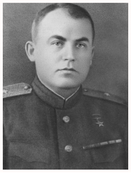
Борис Глебович Музруков (1904 — 1979) — крупный организатор оборонной и ядерной промышленности
-
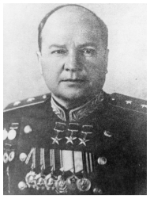
Николай Леонидович Духов (1904 — 1964) — главный конструктор танков
-
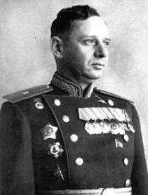
Исаак Моисеевич Зальцман (1905 — 1988) — организатор танкостроения, директор завода в 1941 — 1949 годах
-

Лев Израилевич Горлицкий (1906 — 2003) — главный конструктор бронетехники в 1936 — 1976 годах
-
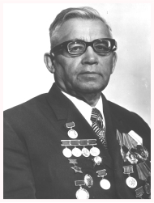
Николай Михайлович Синев (1906 — 1991) — главный конструктор ОКБ в 1944 — 1961 годах
-

Моисей Абрамович Длугач (1907 — 1951) — директор Кировского завода в 1941 — 1951 годах
-
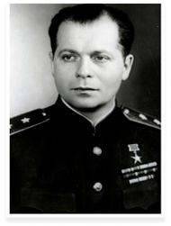
Жозеф Яковлевич Котин (1908 — 1979) — главный конструктор Кировского завода 1937 — 1941 и 1946 — 1968 годах
-
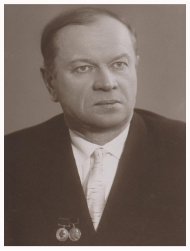
Манфред Антонович Казак (1908 — 1998) — конструктор турбин, лауреат Ленинской премии
-
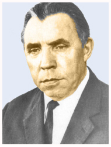
Николай Васильевич Курин (1908 — 1989) — конструктор артиллерийской техники и тракторов
-
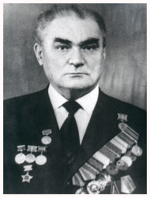
Александр Александрович Любченко (1913 – 1996) — директор Кировского завода в 1965 — 1972 годах
-
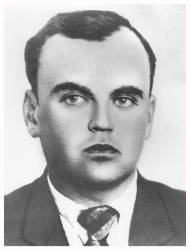
Виталий Александрович Поляченко (1916 — 1968) — инженер и заместитель главного конструктора в 1940 — 1968 годах
-
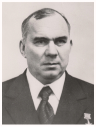
Василий Иванович Улыбин (1916 — 2007) — директор Кировского завода в 1972 — 1976 годах
-
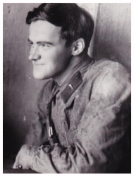
Чарльз (Карл) Гаскойн (1737 - 1806) — первый директор завода
-
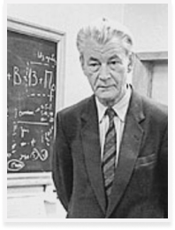
Николай Сергеевич Попов (1931 — 2008) — главный конструктор Кировского завода в 1968 — 1984 годах
-
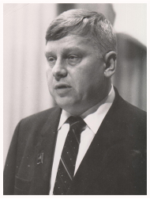
Станислав Павлович Чернов (1937 — 2016) — директор Кировского завода в 1984 — 1987 годах
-
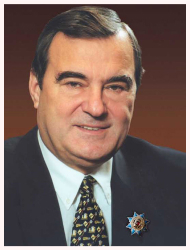
Петр Георгиевич Семененко (1946 — 2005) — директор Кировского завода в 1987 — 2005 годах